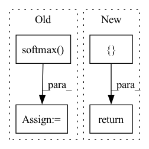

Pattern ID :36597
Before Change
truncation_strategy="only_first")
logits = model(features)[0]
entail_contradiction_logits = logits[:, [0, 2]]
probs = entail_contradiction_logits.softmax(dim=1)
prob_label_is_true = probs[:, 1]
results[label] = prob_label_is_true.item()
return resultsAfter Change
// Must have a consistent amount of examples
assert(len(input_text) == len(labels))
// TODO: implement proper batching
results_list = []
for text, labels in zip(input_text, labels):
results = {}
for label in labels:
results[label] = calculate_probability(text, label)
results_list.append(results)
return results_list
else:
results = {}
for label in labels:In pattern: SUPERPATTERN
Frequency: 4
Non-data size: 4
Instances Fragment ID: 104173857
Project Name: kiri-ai/kiri
Commit Name: 7f0b95ef8169196944a99724b719f73413b4f159
Time: 2020-12-28
Author: ojasaarkristo@gmail.com
File Name: kiri/models/classification.py
M Class Name: AnonimousClass
N Class Name: AnonimousClass
M Method Name: zero_shot(5)
N Method Name: zero_shot(5)
M Parent Class:
N Parent Class:
M File Name: kiri/models/classification.py
N File Name: kiri/models/classification.py
M Start Line: 38
M End Line: 49
N Start Line: 49
N End Line: 69
Before Change
self.log("Val/loss", loss, sync_dist=True)
if self.control_mode == "keyboard":
preds = torch.functional.F.softmax( preds, dim=1)
return {"loss": loss, "preds": preds, "y": y}
After Change
// if self.control_mode == "keyboard":
// preds = torch.functional.F.softmax(preds, dim=1)
return { "preds": preds, "y": y} // "loss":loss}
def validation_step_end(self, outputs):
self.validation_accuracy_k1(outputs["preds"], outputs["y"])
Fragment ID: 104173859
Project Name: ikergarcia1996/self-driving-car-in-video-games
Commit Name: 726238950816f82d89e9cf836713ec67e415aeba
Time: 2021-11-05
Author: igarciaf896@gmail.com
File Name: model.py
M Class Name: Tedd1104ModelPL
N Class Name: Tedd1104ModelPL
M Method Name: validation_step(3)
N Method Name: validation_step(3)
M Parent Class: pl.LightningModule
N Parent Class: pl.LightningModule
M File Name: model.py
N File Name: model.py
M Start Line: 828
M End Line: 835
N Start Line: 909
N End Line: 916
Before Change
loss = self.criterion(preds, y)
self.log("Test/loss", loss, sync_dist=True)
if self.control_mode == "keyboard":
preds = torch.functional.F.softmax( preds, dim=1)
return {"loss": loss, "preds": preds, "y": y}
After Change
// if self.control_mode == "keyboard":
// preds = torch.functional.F.softmax(preds, dim=1)
return { "preds": preds, "y": y} // "loss":loss}
def test_step_end(self, outputs):
self.test_accuracy_k1(outputs["preds"], outputs["y"])
Fragment ID: 104173853
Project Name: ikergarcia1996/self-driving-car-in-video-games
Commit Name: 726238950816f82d89e9cf836713ec67e415aeba
Time: 2021-11-05
Author: igarciaf896@gmail.com
File Name: model.py
M Class Name: Tedd1104ModelPL
N Class Name: Tedd1104ModelPL
M Method Name: test_step(3)
N Method Name: test_step(3)
M Parent Class: pl.LightningModule
N Parent Class: pl.LightningModule
M File Name: model.py
N File Name: model.py
M Start Line: 860
M End Line: 866
N Start Line: 955
N End Line: 962